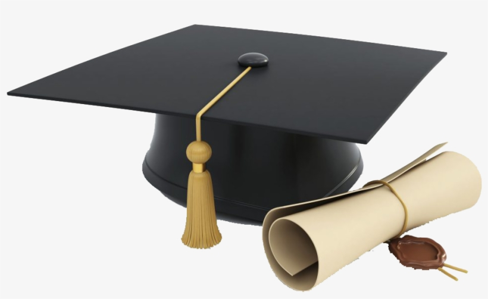
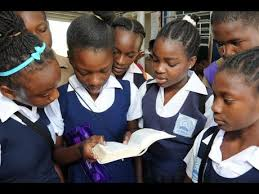

Keeping Students & Parents Informed

This page provides important graduation updates and programme information for students and parents. All key requirements and resources for graduation are available here.
The Caribbean Examinations Council (CXC) conducts exams for students across the Caribbean region. CSEC (Caribbean Secondary Education Certificate) is taken at the end of secondary school, while CAPE (Caribbean Advanced Proficiency Examination) is taken after two additional years of study in specific subjects. These exams are essential for graduation and further education.
Visit our School Website: Click Here
Download School Handbook: Download PDF
Email the Coordinator: coordinator@school.com